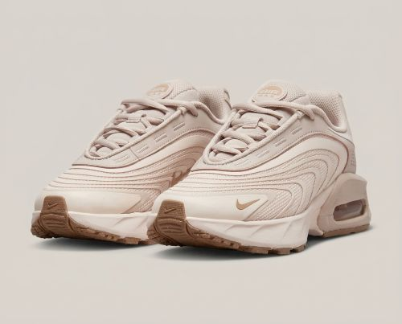

bienvenidos
Una zapatilla de deporte de caña baja de color beige rosado con cordones. El talón es grueso y tiene un diseño de burbuja de aire que sobresale en el lateral. El resto de la suela es marrón y estriada. El lateral de la zapatilla tiene un diseño texturizado que se asemeja a las dunas de arena en un desierto.
